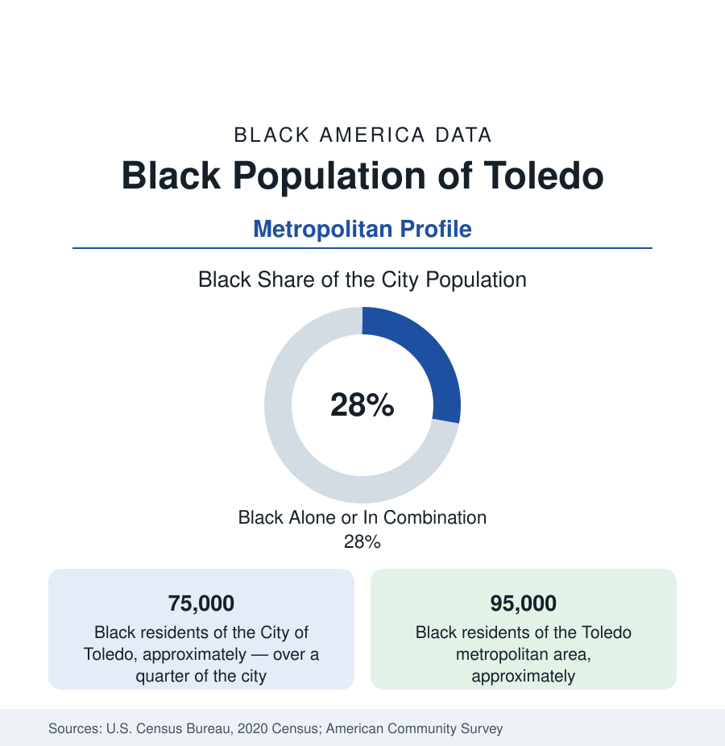

Black Cities
Black Toledo: The Glass City's North End
Toledo holds about 75,000 Black residents in the city and 95,000 across the metro — over a quarter of the Glass City, from Scott High's maroon to the Jeep plant. The census profile.

Toledo holds about 75,000 Black residents within the city — Black alone or in combination, over a quarter of its 268,000 people — and about 95,000 across the metropolitan area. The Glass City's Black community rose with the auto and glass plants of the Maumee River's industrial century, made its ground in the North End and the central city's corridors, and carried a jazz and gospel scene — the pianist Art Tatum, among the greatest who ever played, was born on Toledo's streets — disproportionate to the city's size.
The North End, Indiana Avenue, and Scott's Ground
The geography centers north and central: the North End and the Lagrange Street Polish-Black frontier neighborhoods, the central city's Indiana Avenue corridor (the historic Black commercial spine — its theatres, the Indiana Avenue Missionary Baptist Church's landmark, the businesses of the segregation decades), the Dorr Street corridor running west (the political and institutional avenue, its churches and the Frederick Douglass Community Association's century-old building), and the Scott High School district — the maroon Bulldogs' school an institution in itself, its alumni the community's cross-generational ledger. South Toledo and the newer subdivisions hold the dispersed middle class; Bowling Green and the state university sit twenty-five minutes south in the commuter file. The housing projects' legacy (the Brand Whitlock and Albertus Brown homes among the nation's older public housing) and the urban-renewal clearances of the central corridors are the documented mid-century file.
Glass, Jeeps, and the Auto Century's Bill
The employment data are the auto-glass belt's: the Jeep plant (Toledo's signature factory since the Willys era — the Wrangler and Gladiator lines, its workforce the region's union core across three generations), the glass majors (Libbey, Owens-Illinois's Perrysburg headquarters, the Pilkington float plant), the Powertrain and stamping plants, and the refining corridor on the Maumee's east bank (the BP-Husky and PBF refineries of Oregon, Ohio). The healthcare systems (ProMedica's flagship campus, Mercy Health) and the University of Toledo carry the eds-and-meds tier. The indicators carry the industrial cycle plainly: the 2000s parts-plant closures in the income series, Black poverty concentrated in the central and North End tracts at Rust Belt rates, homeownership in the western and southern neighborhoods, and the post-2014 water crisis file (the Lake Erie algal bloom that shut the city's taps for days — an environmental-justice chapter the region's data now include, the lake's health a standing policy line) as the modern overlay.
Tatum's City: Music, Movement, and the Mayor's Office
The cultural file opens with Tatum — born 1909 on Kress Street, blind in one eye, and by the 1930s the pianist other pianists traveled to hear, his Toledo years commemorated in the jazz archive the city maintains — and runs through the gospel quartets and the Indiana Avenue scene to the modern institutions (the Toledo Museum's community programs, the African American Legacy Project of Northwest Ohio, the archive-keeper of the region's record). The movement file includes the 1960s school and housing fights and the political data of the late century: Black mayors in the modern record (Jack Ford's mayoral win in 2001 the breakthrough), council strength anchored in the central districts, and the Lucas County courthouse politics of the Maumee valley machine. The Mud Hens' downtown ballpark (Fifth Third Field, 2002) marks the center-city revival that the corridor plans extend.
Change and the Estimates
The estimates show the metro near flat — the Jeep complex's investments and the glass corridor's persistence offsetting the parts-belt losses — its Black population holding in count, its suburbs (Perrysburg, Maumee, Sylvania) growing whiter and wealthier at the edges in the standard pattern, and the current files running through the riverfront and Glass City Metropark development across the Maumee, the central corridor reinvestment plans, and the lake's water-quality politics that Toledo's crisis made national. The county's land-bank and neighborhood-revitalization programs, aimed first at the central tracts, form the housing file the next estimates will judge.
Reading the Toledo Numbers
Toledo's 95,000 metro Black residents built Jeeps through three wars' economies and glass through a century — and produced, from a street off Indiana Avenue, the pianist the century's masters called the eighth wonder. The Glass City's quarter is load-bearing: remove it and the plants, the parishes, and the music all lose their makers.
More in Black Cities
Black Atlanta: Population, Distribution, and Growth of a Black Metropolis
Metro Atlanta holds more than two million Black residents — roughly one in three, second only to New York. The suburban distribution, migration history, and composition of Black Atlanta in the census data.
Black New York: The Largest Black Population in America
The New York metropolitan area holds about 3.4 million Black residents — more than any metro in the nation — and the city itself about two million. The census profile.
Black Washington: The District and the Metro
The Washington metro holds about 1.6 million Black residents, and the District itself — long a majority-Black city — now records a Black share near 41 percent. The census profile.
Source: U.S. Census Bureau, 2020 Census; American Community Survey; Population Estimates Program.